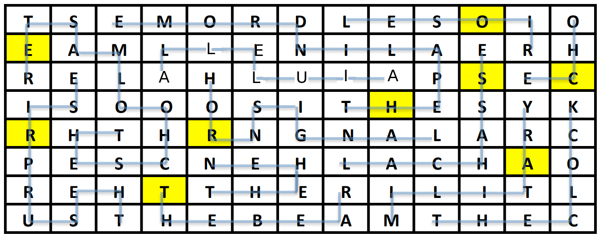

Below the flavortext are two main items:
Eventually, by traveling around and mapping the sounds, the solver will realize that the giant chamber is basically a 13x8 grid. (The START square is where the solver begins whenever they start or restart the app.) Below are locations and descriptions of all the sounds that we’d hear.
| 1 | 2 | 3 @ | 4 | 5 | 6 | 7 | 8 | 9 | 10 | 11 * | 12 | 13 ^ |
| 14 * | 15 | 16 | 17 | 18 | 19 | 20 | 21 | 22 | 23 | 24 % | 25 # | 26 |
| 27 + | 28 - | 29 | 30 | 31 | 32 | 33 | 34 | 35 > | 36 | 37 * | 38 | 39 * |
| 40 | 41 | 42 | 43 | 44 | 45 | 46 | 47 | 48 * | 49 | 50 | 51 ? | 52 = |
| 53 * | 54 | 55 | 56 | 57 * | 58 | START | 60 | 61 | 62 < | 63 | 64 | 65 |
| 66 | 67 | 68 | 69 | 70 $ | 71 | 72 | 73 | 74 | 75 | 76 | 77 * | 78 |
| 79 | 80 | 81 | 82 * | 83 | 84 | 85 | 86 \ | 87 | 88 | 89 | 90 | 91 |
| 92 | 93 | 94 | 95 | 96 | 97 | 98 | 99 | 100 | 101 | 102 | 103 | 104 |
| NOISE | |
|---|---|
| * | A small bell ringing |
| + | “I before e, except after c.” |
| @ | “A man, a plan, a canal, Panama!” |
| ^ | Echo-y “Hello!... Hello… hello…” |
| - | A group of people yelling “Surprise!” |
| = | A clock ticking |
| > | A chorus singing “Alleluia!” |
| # | Crickets chirping in the evening |
| % | A hunting bugle with hounds barking |
| ? | An officer barking marching orders |
| < | A car horn honking |
| $ | A chicken clucking |
| \ | A growl, as if from a bear |
WAYS FOR THE SOLVER TO GET TO THE BIG “AHA”
THE BIG “AHA”
FROM THERE…
Now one can fill in the blanks with the proper symphony nicknames (the blanks will also help weed out any discrepancies in the correct names). To help with solving, the symphonies are listed in increasing numerical order:
The numbered spaces, in order, spell out the instruction DO NUMBERLINK.
The rooms are numbered 1 through 104. Thus, each sound has two clear positions connected to it: its actual location, and the location of its corresponding symphony number’s room. However, if we naively connect the locations in traditional numberlink style, there’s no unique solution.
The solver may notice that for symphonies with shorter names, the two locations are pretty close to each other. In fact, many (ECHO, LE SOIR, etc.) are exactly as many rooms away from each other as the symphony’s word length. Are we supposed to connect the two endpoints using each symphony’s name? Totalling the letters in all the symphony names gives us 104, suggesting that yes we should do that, and that will perfectly fill up the grid.
It turns out there is only one way to make all the connections in the grid such that each line takes up exactly the same number of squares as its symphony name.
Once all the connections are made, one can then fill in the grid using the symphony nicknames. Each symphony name starts at the proper number for its symphony and then winds its way to its endpoint, where the sound was found in the grid. (The final sentence of the flavortext helps clue this direction for us.)
The only thing we haven’t yet used are the spaces that have a bell ringing. Each symphony, it turns out, has either 0 squares or 1 square with a bell in it. Below are those highlighted spaces and letters. Reading the letters in numerical order of the symphonies (as given on the puzzle page) gives us the solution, ORCHESTRA.

| NOISE | SYMPH. TITLE | SYMPH. # | TITLE LEN. | BELL | |
|---|---|---|---|---|---|
| # | Crickets chirping in the evening | LE SOIR | 8 | 6 | O |
| > | A chorus singing “Alleluia!” | ALLELUIA | 30 | 8 | |
| < | A car horn honking | HORNSIGNAL | 31 | 10 | R |
| ^ | Echo-y “Hello!... Hello… hello…” | ECHO | 38 | 4 | C |
| @ | “A man, a plan, a canal, Panama!” | THE PALINDROME | 47 | 13 | H |
| + | “I before e, except after c.” | THE SCHOOLMASTER | 55 | 15 | E |
| % | A hunting bugle with hounds barking | LA CHASSE | 73 | 8 | S |
| \ | A growl, as if from a bear | THE BEAR | 82 | 7 | T |
| $ | A chicken clucking | THE HEN | 83 | 6 | |
| - | A group of people yelling “Surprise!” | THE SURPRISE | 94 | 11 | R |
| ? | An officer barking marching orders | MILITARY | 100 | 8 | A |
| = | A clock ticking | THE CLOCK | 101 | 8 |